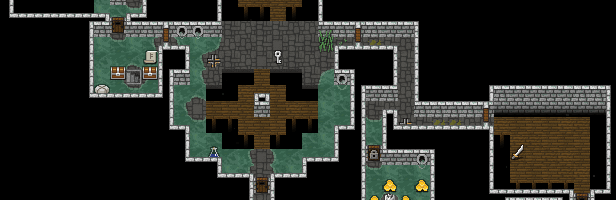

Fight smart
Pull enemies into hallways instead of fighting crowds.
Shattered Pixel Dungeon
Shattered Pixel Dungeon is a roguelike RPG with traps, loot, monsters, upgrades, and permadeath.
Download Shattered Pixel Dungeon
Basics
Survival
Pull enemies into hallways instead of fighting crowds.
Unknown potions and scrolls can save or ruin a run.
Use upgrades on gear you plan to keep.